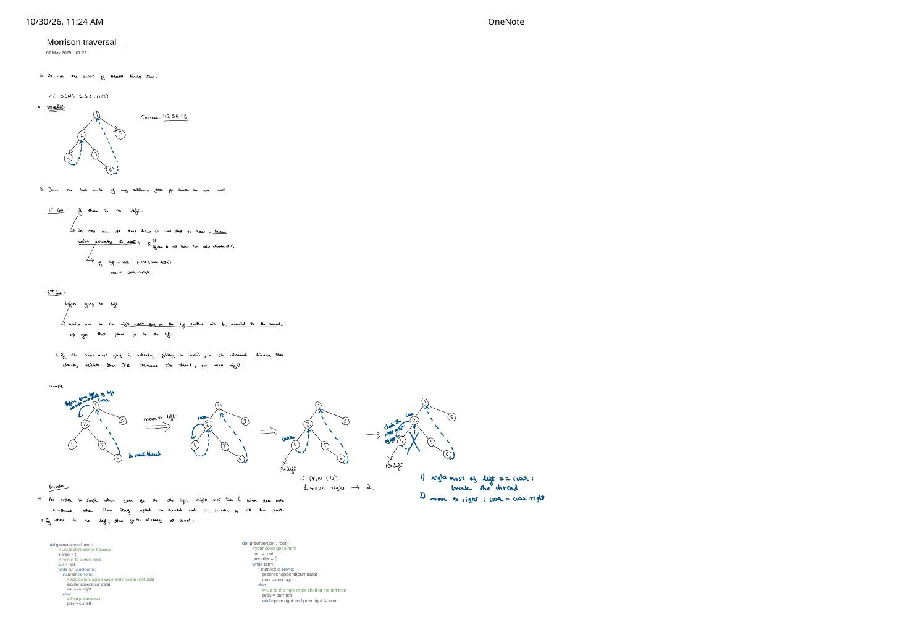
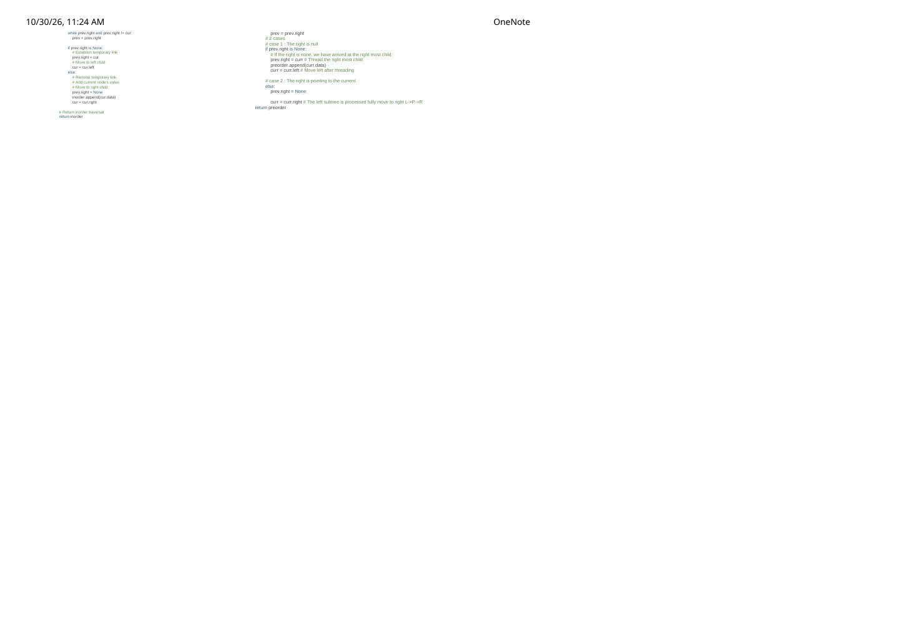

Morris Inorder & Preorder Traversal: $O(n)$ Time & $O(1)$ Space via Threaded Predecessors
Expanded from handwritten competitive coding study notes (01_Morrison_traversal.pdf)
Both recursive DFS and iterative stack-based tree traversals spend $O(H)$ auxiliary memory ($O(n)$ worst-case on a skewed tree) for a single reason: once you descend into curr->left, child nodes have no parent pointer to climb back up to curr. Morris Traversal eliminates the recursion stack completely—achieving $O(n)$ time and $O(1)$ auxiliary space—by temporarily wiring unused nullptr right pointers into a Threaded Binary Tree and cleanly erasing every thread on the way back.
1. Core Intuition: Where Do You Return After Finishing a Left Subtree?
In an inorder walk (Left → Root → Right), the very last node visited inside curr's left subtree is curr's inorder predecessor: the rightmost node reachable from curr->left. Notice a crucial structural fact: because it is the rightmost node of that subtree, its right pointer is guaranteed to be nullptr!
The Two Cases at Current Node curr (Page 1)
- 1st Case — No left child (
curr->left == nullptr): There is no left subtree to visit first ("inL → P → R, ifLis missing, we are already atP!"). Recordcurr->valand step right:curr = curr->right(which either enters a real right subtree or rides a thread back up to an ancestor). - 2nd Case — Left child exists (
curr->left != nullptr): Walk to the rightmost nodeprevincurr->left(stopping ifprev->right == nullptrorprev->right == curr):prev->right == nullptr(1st arrival atcurr): Install temporary threadprev->right = curr, then descend left:curr = curr->left.prev->right == curr(2nd arrival atcurrvia thread): The entire left subtree has already been processed! Break the thread (prev->right = nullptr) to restore the original tree, recordcurr->val(for Inorder), and step right:curr = curr->right.
4.right → 2 and 6.right → 1.2. Complete Pointer-by-Pointer Dry Run on {1, 2, 3, 4, 5, 6}
Let's trace every single iteration of while (curr != nullptr) on the tree above, tracking both Inorder and Preorder emissions:
| Step | curr |
curr->left & Predecessor prev |
Thread Action | Inorder Out | Preorder Out | Next curr |
|---|---|---|---|---|---|---|
| 1 | 1 |
left = 2; walk 2 → 5 → 6 (prev = 6, 6->right == nullptr) |
Create 6->right = 1 |
— | 1 |
2 (curr->left) |
| 2 | 2 |
left = 4; prev = 4 (4->right == nullptr) |
Create 4->right = 2 |
— | 2 |
4 (curr->left) |
| 3 | 4 |
left == nullptr (Case 1) |
Follow thread 4->right |
4 |
4 |
2 (via thread!) |
| 4 | 2 |
left = 4; prev = 4 has 4->right == 2! |
Break 4->right = nullptr |
2 |
— | 5 (curr->right) |
| 5 | 5 |
left == nullptr (Case 1) |
Normal right child | 5 |
5 |
6 (5->right) |
| 6 | 6 |
left == nullptr (Case 1) |
Follow thread 6->right |
6 |
6 |
1 (via thread!) |
| 7 | 1 |
left = 2; walk 2 → 5 → 6 has 6->right == 1! |
Break 6->right = nullptr |
1 |
— | 3 (curr->right) |
| 8 | 3 |
left == nullptr (Case 1) |
3->right == nullptr |
3 |
3 |
nullptr (Done!) |
3. Morris Inorder vs. Morris Preorder: A Single-Line Difference
Pages 1–2 place getInorder and preorder side by side to highlight a remarkable symmetry: every node with a non-empty left subtree is visited twice—first when creating its thread (before entering curr->left) and second when breaking its thread (after finishing curr->left):
- Morris Inorder (
L → P → R): Recordcurr->valin theelsebranch when breaking the thread (2nd visit). - Morris Preorder (
P → L → R): Recordcurr->valin theif (prev->right == nullptr)branch when creating the thread (1st visit)! - Nodes with
curr->left == nullptrare visited only once, so both Inorder and Preorder recordcurr->valimmediately in Case 1.
C++ Templates (Morris Inorder & Morris Preorder)
#include <vector>
struct TreeNode {
int val;
TreeNode *left, *right;
explicit TreeNode(int v) : val(v), left(nullptr), right(nullptr) {}
};
// 1. Morris Inorder Traversal (Left -> Root -> Right) — O(n) time, O(1) space
std::vector<int> morrisInorder(TreeNode* root) {
std::vector<int> inorder;
TreeNode* curr = root;
while (curr != nullptr) {
if (curr->left == nullptr) {
inorder.push_back(curr->val);
curr = curr->right;
} else {
// Find inorder predecessor: rightmost node in curr's left subtree
TreeNode* prev = curr->left;
while (prev->right != nullptr && prev->right != curr) {
prev = prev->right;
}
if (prev->right == nullptr) {
prev->right = curr; // 1st visit: install thread
curr = curr->left; // Descend into left subtree
} else {
prev->right = nullptr; // 2nd visit: remove thread!
inorder.push_back(curr->val); // INORDER emits Root AFTER Left
curr = curr->right; // Advance to right subtree
}
}
}
return inorder;
}
// 2. Morris Preorder Traversal (Root -> Left -> Right) — O(n) time, O(1) space
std::vector<int> morrisPreorder(TreeNode* root) {
std::vector<int> preorder;
TreeNode* curr = root;
while (curr != nullptr) {
if (curr->left == nullptr) {
preorder.push_back(curr->val);
curr = curr->right;
} else {
TreeNode* prev = curr->left;
while (prev->right != nullptr && prev->right != curr) {
prev = prev->right;
}
if (prev->right == nullptr) {
prev->right = curr; // 1st visit: install thread
preorder.push_back(curr->val); // PREORDER emits Root BEFORE Left!
curr = curr->left;
} else {
prev->right = nullptr; // 2nd visit: remove thread
curr = curr->right; // Left is done; move to Right
}
}
}
return preorder;
}4. Why Is Time Complexity Still $O(n)$ Despite the Inner while Loop?
At first glance, walking prev = prev->right inside the outer while (curr != nullptr) loop looks like it might cost $O(n \cdot H)$ ($O(n^2)$ on a skewed tree). Count per tree edge instead of per node:
Amortized Edge-Traversal Bound
- Every left child edge $(u \to u.\text{left})$ is traversed by
curronce. - Every right child edge $(x \to x.\text{right})$ lies on the right spine of at most one ancestor's left subtree! That ancestor's predecessor search walks $(x \to x.\text{right})$ once when creating the thread and once when removing the thread—plus
currtraverses it once during normal descent.
Because each of the $n - 1$ tree edges is traversed at most $3$ times in total, total pointer steps across the entire algorithm are bounded by $\le 3(n - 1) + n = \mathbf{O(n)}$ time with $O(1)$ auxiliary space.
- LC 94 / LC 144: Binary Tree Inorder & Preorder Traversal in $O(1)$ space.
- LC 99 (Recover Binary Search Tree) & LC 230 ($k$-th Smallest in BST): Maintain a single
last_visitedpointer during Morris Inorder to detect swapped BST nodes in $O(1)$ memory—Just remember in LC 230 not toreturnearly while temporary threads are still active, or finish the loop so every thread is cleaned up! - LC 114 (Flatten Binary Tree to Linked List): A direct permanent variant of Morris Preorder rewiring!
From the Handwritten Notes
Expand the original handwritten pages below to inspect the exact derivations, dry runs, and annotations:
View original note — Page 1: Threaded Binary Tree Diagram, 4-Step Pointer Trace & Preorder Insight


01_Morrison_traversal.pdf: threaded tree 4 2 5 6 1 3, Case 1 vs. Case 2 rules, and 4-panel visual thread creation/deletion trace.View original note — Page 2: Side-by-Side Morris Inorder & Preorder Code


01_Morrison_traversal.pdf: completing getInorder and preorder side by side to highlight thread creation vs. thread removal placement.